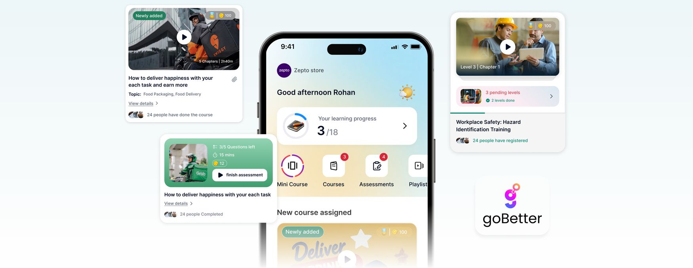

/01 Project Overview
Crafting meaningful learning for blue-collar workers.
Two years ago, Oust became part of BetterPlace, but it remained a separate product. BetterPlace has since rebranded as GoBetter HRMS solutions, and Oust, as an individual product, was discontinued. Instead, it merged into GoBetter as Up-skill.
As part of that change, we completely redesigned the app. The revamped experience is more engaging, meaningful, and aspiring for frontline workers, and it helps the business grow, improves client satisfaction, and increases productivity and retention.
My role
Product designer
Showing only the information that helps users act directly from the home page, with more emphasis on CTAs and engaging elements like coins and badges.
Team
Akhil Male
With Bijoy Prasad Shah and Sugata Biswas.
Timeline
3 months
From redesign kickoff to launch in April 2024.
